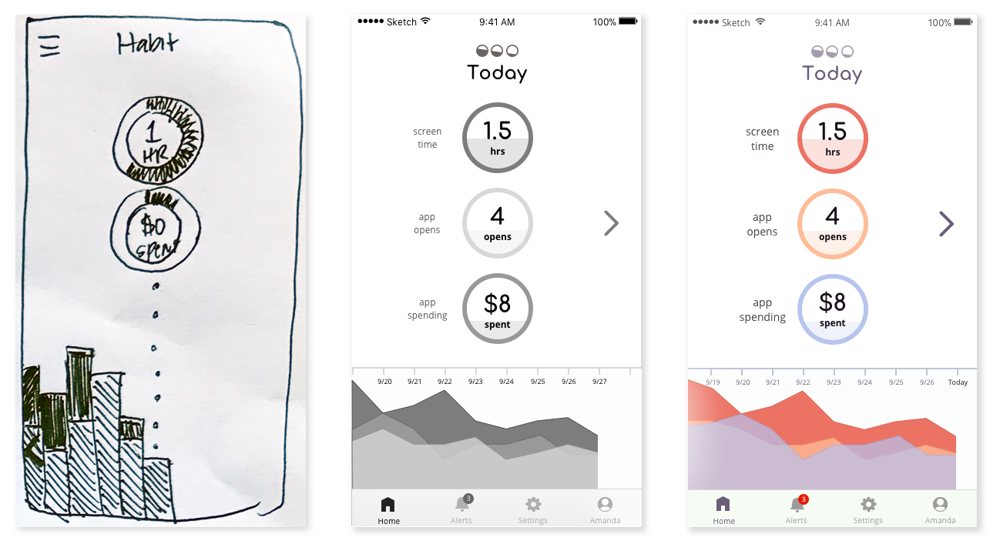
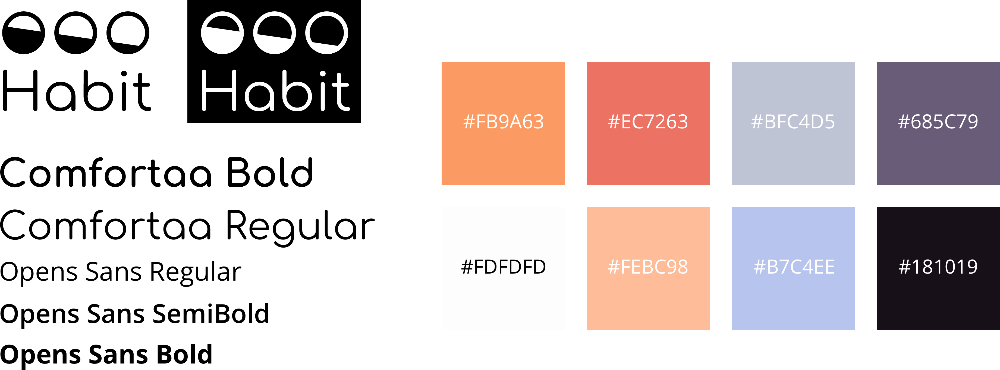
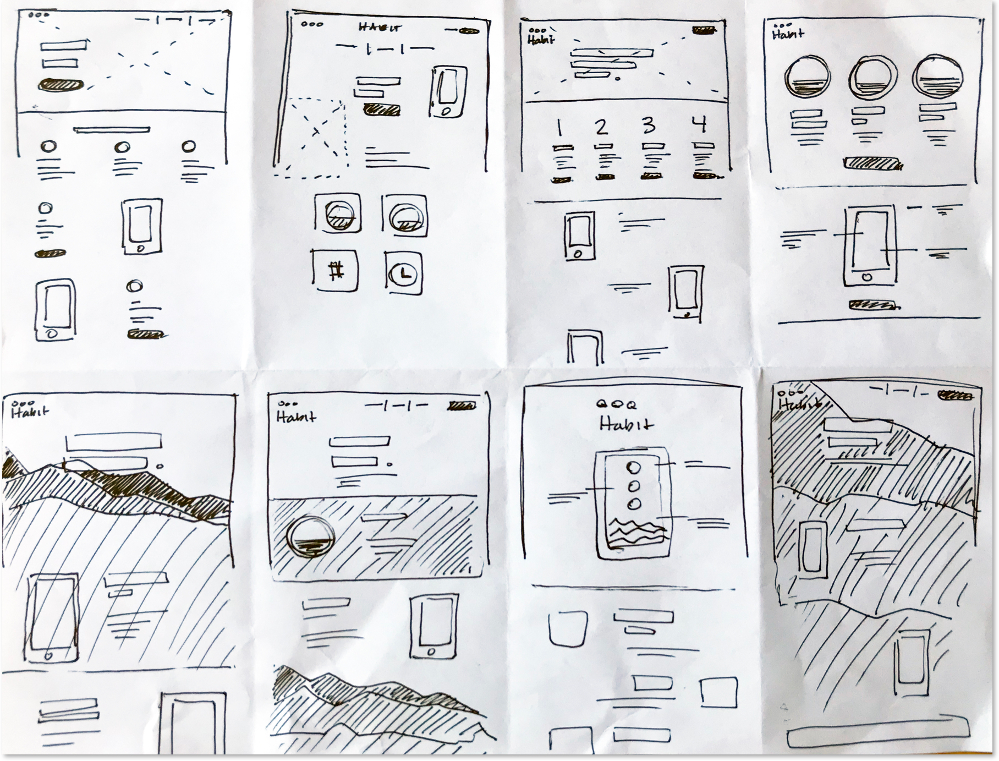
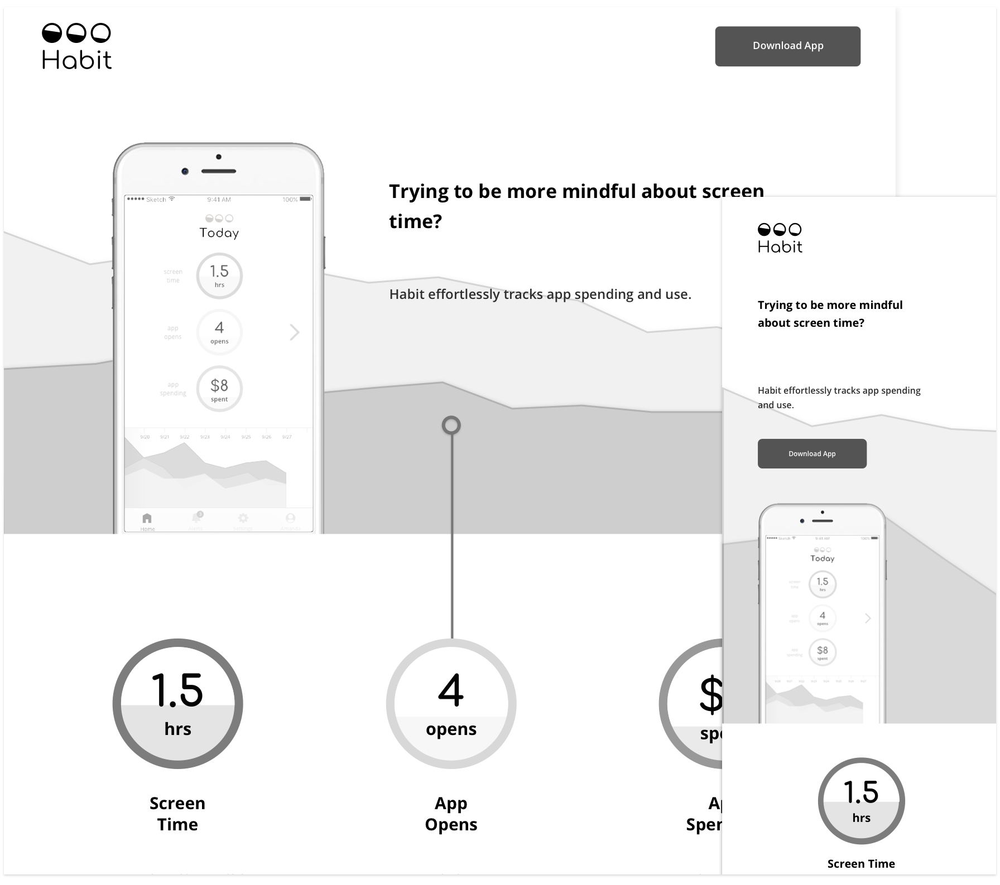

As I was beginning on wireframes for Habit, I also developed a brand and style guide. The logo represents the decrease of time and money spent on apps (the main goal of Habit) and the three buckets of information we’ll be summarizing for users - time spent on apps, number of app opens, and total money spent. For typography, I used Comfortaa for its geometric design and Open Sans for its humanistic characteristics that give the design a friendly feel. I wanted the color pallette to be fresh, warm, and calming and was drawn to colors that reminded me of a sunset and maintaining balance.

I took elements from sketches and created wireframes based on user flows. I began with designing an easy to interpret summary screen. With mentor guidance, I made edits to wireframes before incorporating the full visual style into a mockup. Main edits included adding clarifying text and adjusting spacing.
I created mockups in Sketch, utilizing the color pallette to help users keep track of stats throughout the app. Mockups went through several rounds of user feedback and testing. Through user testing, I learned that some did not realize goal setting was an option. Based on this information, I incorporated goal setting into an onboarding process. User testing also lead to fine tuning placement of the timeline and re-grouping items in account settings. After these changes, Habit was more user-friendly and intuitive.
The last step in this project was creating a responsive marketing web page design for Habit. I followed the same process: sketching, wireframing, and adding the visual style. I then used HTML, CSS, and JavaScript to create a fully responsive web page that replicated the hi-fidelity prototype created in Sketch.

